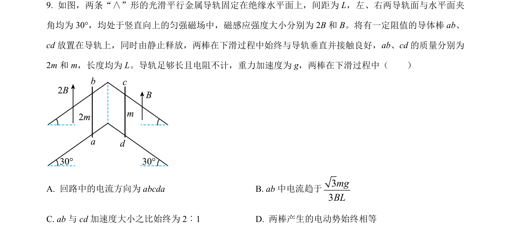
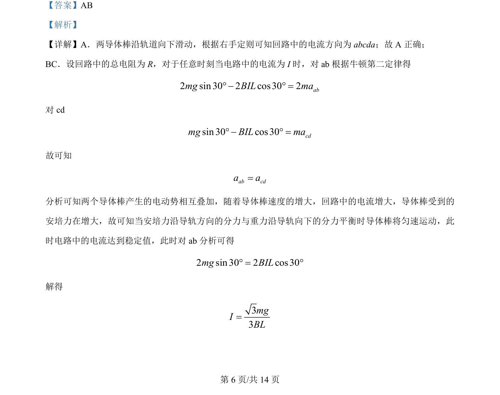
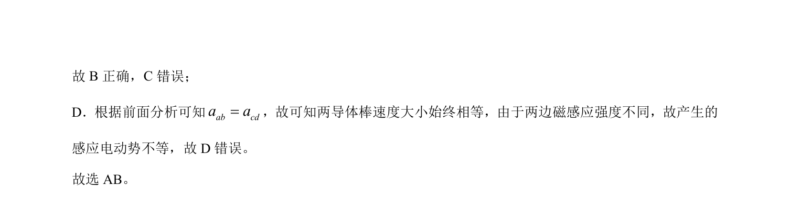

考点：右手定则 安培力 牛顿第二定律 感应电动势

两导体棒在倾斜导轨上运动，分析电流方向、安培力、加速度关系及匀速条件。


📄 原 PDF 第 6 页：
素材/真题/吉林/2008-2024·（吉林）物理高考真题/2024年高考物理试卷（辽宁）（解析卷）.pdf
【答案】AB 【解析】 【详解】A．两导体棒沿轨道向下滑动，根据右手定则可知回路中的电流方向为 abcda；故 A 正确； BC．设回路中的总电阻为 R，对于任意时刻当电路中的电流为 I 时，对 ab根据牛顿第二定律得 2 sin 30 2 cos30 2abmg BIL ma° - ° = 对 cd sin 30 cos30cdmg BIL ma° - ° = 故可知 ab cda a= 分析可知两个导体棒产生的电动势相互叠加，随着导体棒速度的增大，回路中的电流增大，导体棒受到的 安培力在增大，故可知当安培力沿导轨方向的分力与重力沿导轨向下的分力平衡时导体棒将匀速运动，此 时电路中的电流达到稳定值，此时对 ab分析可得 2 sin 30 2 cos30mg BIL° = ° 解得 33mgIBL=